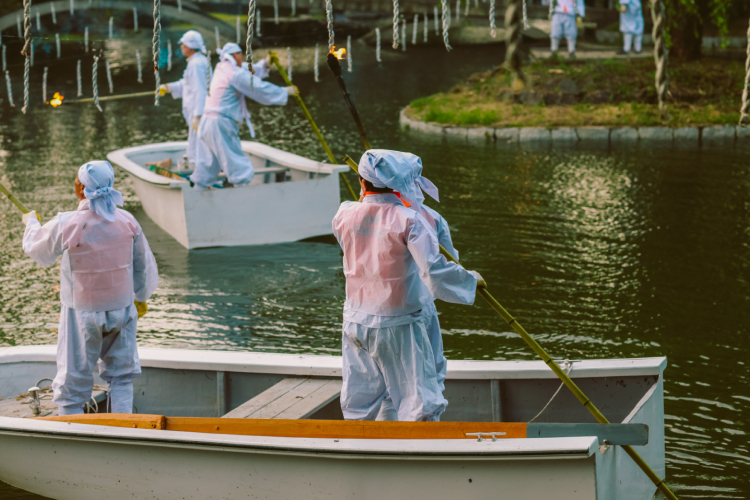
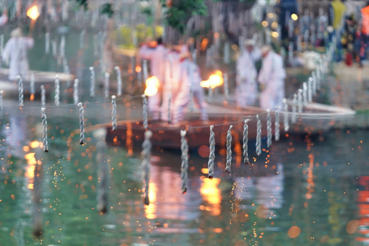
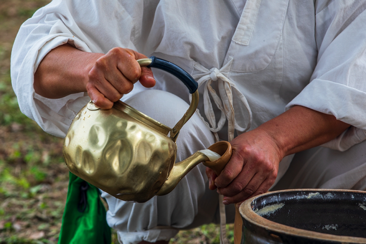
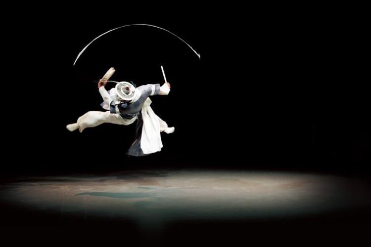
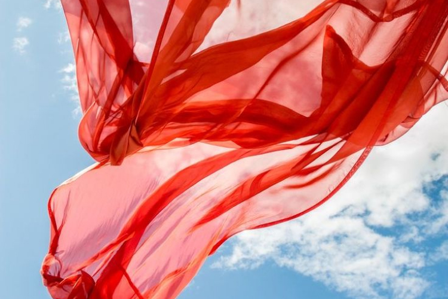
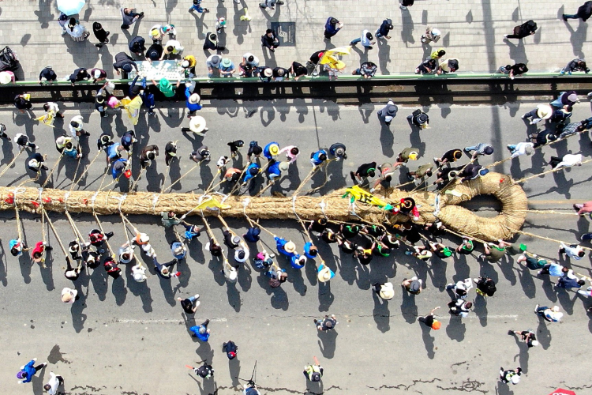
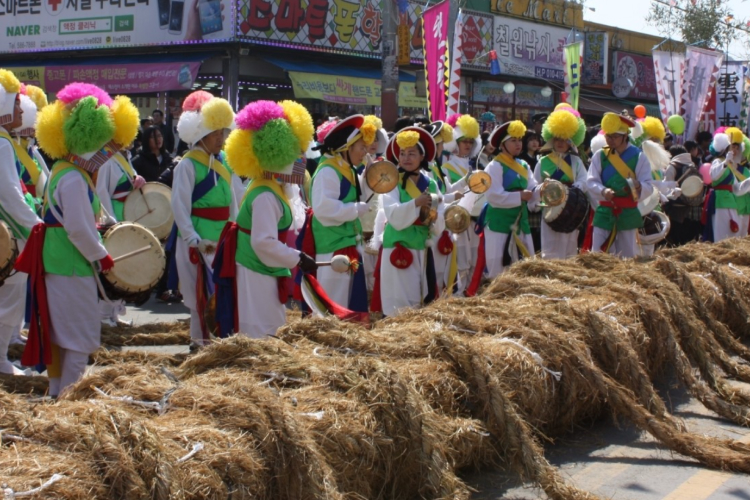
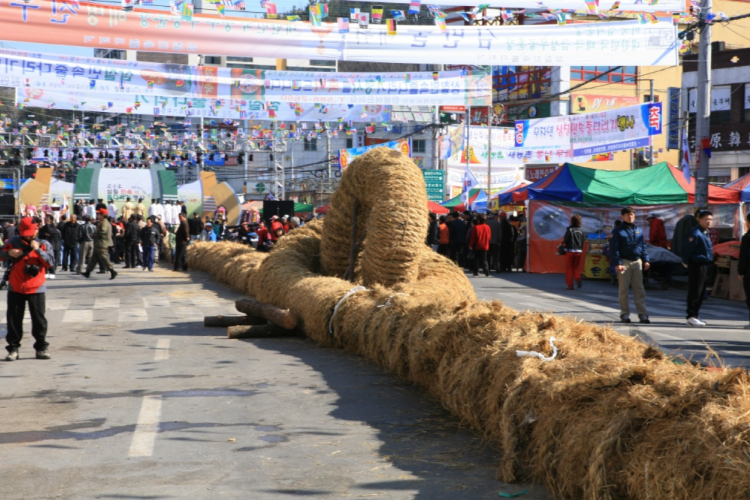

Traditional game
무진정 낙화놀이
- 01. 무진정
- 무진정 일대에서 열리는 함안낙화놀이 군민의 안녕을 기원하는 뜻에서 매년 석가탄신일에 무진정 일대에서 열리는 함안 고유의 민속놀이다. 함안 낙화놀이는 일제 강점기에는 민족정기 말살정책에 따라 중단되었다가 1985년 복원되어 매년 행사를 실시하여 함안군민의 안녕을 기원하고 있다.

- 02. 낙화봉
- 연등과 연등사이에 참나무 숯가루로 만든 낙화를 매달아 이 낙화에 불을 붙여 꽃가루처럼 물위에 날리는 불꽃놀이이다.낙화봉을 만드는 재료는 숯가루를 한지로 말아 놓은 것 2개를 꼰 꽈배기 모양을 하고 있다.

- 03. 초파일
- 사월초파일에 함안 낙화놀이가 무진정에서 성대하게 열린다. 축제는 오후 4시30분, 식전행사인 앞놀이를 시작으로 고유제, 개막식 순으로 진행된다. 개막식에 이어 오후 7시30분부터 함안낙화놀이의 하이라이트인 점화식이 시작된다.

함안아라문화제
- 01. 무진정
- 무진정 일대에서 열리는 함안낙화놀이 군민의 안녕을 기원하는 뜻에서 매년 석가탄신일에 무진정 일대에서 열리는 함안 고유의 민속놀이다. 함안 낙화놀이는 일제 강점기에는 민족정기 말살정책에 따라 중단되었다가 1985년 복원되어 매년 행사를 실시하여 함안군민의 안녕을 기원하고 있다.

- 02. 낙화봉
- 연등과 연등사이에 참나무 숯가루로 만든 낙화를 매달아 이 낙화에 불을 붙여 꽃가루처럼 물위에 날리는 불꽃놀이이다.낙화봉을 만드는 재료는 숯가루를 한지로 말아 놓은 것 2개를 꼰 꽈배기 모양을 하고 있다.

- 03. 초파일
- 사월초파일에 함안 낙화놀이가 무진정에서 성대하게 열린다. 축제는 오후 4시30분, 식전행사인 앞놀이를 시작으로 고유제, 개막식 순으로 진행된다. 개막식에 이어 오후 7시30분부터 함안낙화놀이의 하이라이트인 점화식이 시작된다.

삼칠줄다리기
- 01. 아라가야문화제
- 함안은 6가야 중의 맹주국이었던 아라가야의 중심지입니다.아라가야의 찬란한 얼과 슬기를 보전하고 계승하기 위하여 매년 '아라가야문화제'라는 이름으로 다양한 문화행사를 개최하고 있습니다.

- 02. 행사내용
- 함안군에서는 역사·문화 콘텐츠를 활용한 체험·전시 프로그램과 한여름의 정취를 물씬 느낄 수 있는 야간 행사 등을 세심하게 꾸렸다.
함안군청과 주민, 지역 예술가들이 하나가 되어 함안의 유구한 역사를 따듯하게 품고 일상의 힐링을 찾아나섰다.

- 03. 놀이방법
- 3,000여 명의 주민이 윗줄인 청룡 줄과 아랫줄인 백호 줄로 나눠 줄을 당기게 되는데, 청룡과 백호 대항 줄다리기는 3판 2선 승제로 승부를 가르게 된다. 함안 군수와 삼칠 민속 줄다리기 위원장 등이 시총자로 나서 줄다리기의 시작을 알린다. 그리고 줄을 당길 때는 도래라고 하는 줄 머리에 동그랗게 만든 고리에 큰 통나무를 넣어 양 줄을 연결하고 각 줄에 총대장 1명과 부대장 2명이 도포를 입고 줄 위에 서서 구령에 맞춰 줄을 당기도록 독려한다.
